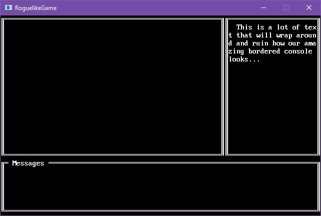

Create a bordered console
A lot of the time you want a border around a console, which is pretty easy to do using the Box shape. However, if you want to use typing/virtual cursor or you’re printing things that may wrap the next line, this becomes a problem. The text will wrap into the box border:

A border is supposed to be a decoration for the console and not get in the way of the console’s normal functions. We can solve this by separating out the border from the console and treating it as its own object.
Use a second surface
We can solve the border problem is by rendering a second BasicSurface whenever our console draws. A normal console is a combination of two things, a BasicSurface and a SurfaceRenderer. All we need to do is hook into the draw process and tell the system to draw a border positioned at -1,-1 relative to the console’s position. The border will be +2,+2 in size compared to the console.
Let’s create the extra BasicSurface in our new BorderedConsole class.
1 | using SadConsole.Consoles; |
Now that the BasicSurface that will hold our border is created, lets draw a box. To draw on a BasicSurface we use the SurfaceEditor. Add the following code below the creation of the borderSurface.
1 | var editor = new SadConsole.Surfaces.SurfaceEditor(borderSurface); |
This line creates creates a SurfaceEditor instance which we can use to change the surface. SadConsole provides a shape class for making boxes: SadConsole.Shapes.Box. Let’s create that, and use the editor instance to draw on the surface.
1 | // Create a box style using the thick looking lines |
You notice that base.Renderer.Render line? This actually draws the surface, not the screen though, but to memory. Each Surface has a LastRenderResult property that represents the last drawn state, which is a cached texture. When a Renderer goes to draw a surface, it checks for a Surface.IsDirty flag. If that flag is true, then the LastRenderResult is redrawn with the latest state of the console. This way, even if you call Render multiple times, though the surface has not actually changed, CPU/GPU time is not wasted.
How do we get our border to the screen though? Our console will automatically be drawn to the screen, so we’ll hook into that process and draw the border along with the console. Override the Draw method and add code that will draw the border surface to the screen before the main console is drawn.
In the Draw method we use a DrawCall to get something to the screen, part of the SadConsole’s core drawing system. SadConsole gathers all drawing calls each frame and then renders them (eventually) to the screen. We need to tell SadConsole we want to draw our cached surface to the screen.
1 | public override void Draw(TimeSpan delta) |
Now when we move and draw the console, it will look similar like this:

Final code
1 | using SadConsole.Consoles; |